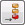
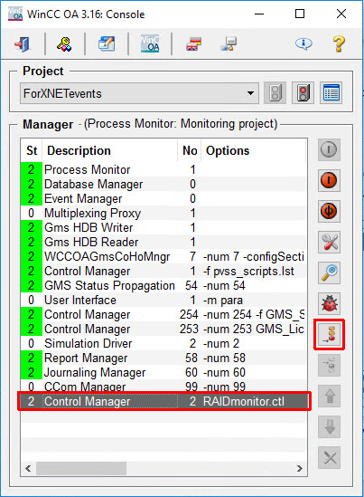
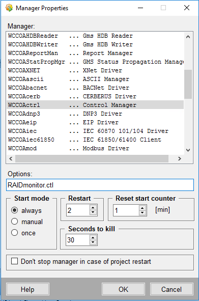

RAID Monitoring
Scenario: You want to monitor a dual-disk RAID array on a Comark station. You need to modify a system setting on the WinCC OA Console and add a RAID monitoring manager.
- On the management station equipped with RAID array, you have installed the Intel Rapid Storage Technology (RST) tool.
- In Desigo CC, you have configured the hard disk monitoring (by default the D: disk, contact customer support for other drive letters). For more information, refer to Monitoring the Hard Drive of a Station.
- On the Desigo CC server station, from Windows, start the WinCC OA Console:
- Click the Windows Start button
- Enter WinCC
- Select WinCC OA x.yy Console
- The console window displays.
- Click the Append a New Manager icon

. - The Manage Property window displays.
- In the Options field, enter: RAIDmonitor.ctl
- In the Start mode field, select Always.
- Click OK.
- In the console window, the new Control Manager entry appears in the Manager list.
- Click X in the top right corner of the console window to close it.
- The RAID array is now monitored. In case of a RAID failure, a fault event with acknowledgement occurs on the hard disk object.

